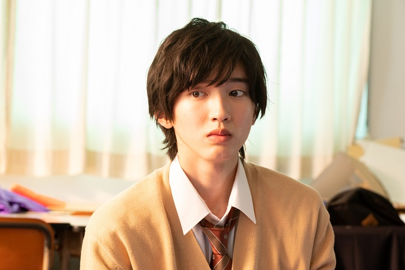
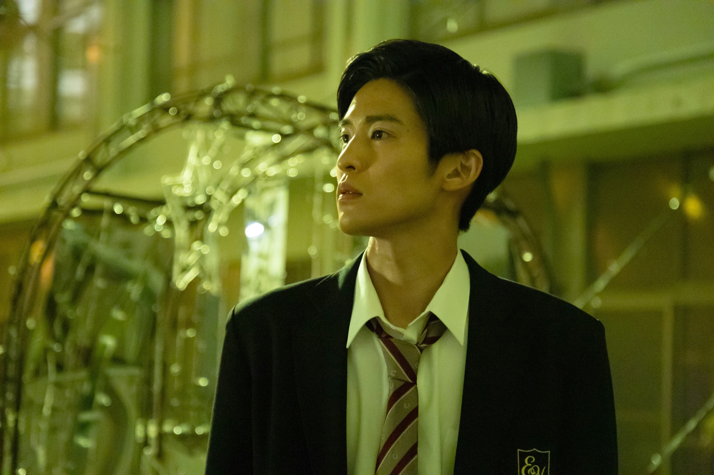
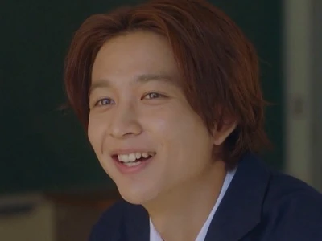

CHARACTERS

Aoki
Aoki, the main character of the series, has a love interest on his friend, Hashimoto. However, his heart soon gets stolen by his seatmate all because of an eraser with his classmates name on it.
Ida
Ida is Aoki's seatmate who sees his name in Aoki's eraser where in that action is usually known to manifest one's love by writing their love interests name in the eraser. Ida thinks Aoki likes him and the whole situation stirs up and he soon becomes Aoki's new love interest.

Hashimoto
Hashimoto is Aoki's initial love interest. Hashimoto has a kind heart and was very sweet which made Aoki fall for her. She was the one who gave Aoki her eraser which Ida saw and thought it belonged to Aoki.
Aida
Aida is Hashimoto's love interest. He is introduced as Aoki's long term bestfriend in the series. He supports Aoki throughout his struggles during the series as he goes throguh his own issues with Hashimoto.
